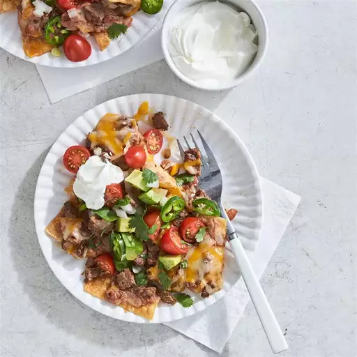

Nachos

Description
After tweaking this recipe for several years, this recepi is the one!
Ingredients
- 500g ground beef
- 50g Santamaria Tacospice
- 300g cheese
- 300g tortilla chips
Directions
- Heat the groundbeef in a pan, when it is done, mix in tacospice with 1dl water
- Fill a ovenproof dish with tortilla chips
- Put the finished ground beef on top off the chips
- Top with cheese
- Put the ovenproof dish in the oven at 225 degrees and let it cook until the cheese is fully melted.